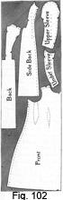
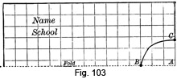
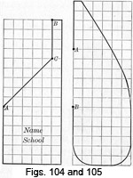
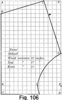
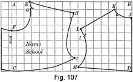
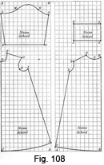
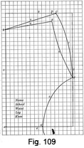
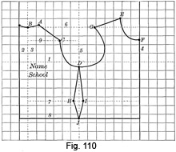
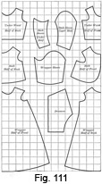

1893—School Needlework
by Olive C. Hapgood
Part IV—Drafting, Cutting, and Making Garments
A few general directions for the cutting of garments are here given.
A table or lap-board, large enough to lay the entire pattern upon, is required; also paper, sharp shears, weights, pins, tape-measure, needles, and thread.
The first thing to be observed in cutting is whether the cloth has a right arid a wrong side. If it has a design, consider the heavier part as the bottom; a vine should run upwards; the nap on the cloth should run downwards.
Before cutting, ascertain if there is sufficient cloth by laying the different parts of the pattern upon the cloth in such positions, that the cloth will not be unnecessarily wasted; being careful in regard to the up and down of the cloth. When there is a scarcity of material, the underneath parts of the sleeves may be pieced, hems may be faced, and the small pieces may often be used for the trimmings.
The length of the main parts of a garment (as back, front, and sleeves) should be cut parallel to the selvedge or warp of the cloth. Fig. 102 represents a wrapper placed on cloth, which is folded lengthwise through the middle; the edge of the front is placed on the selvedge, and the back on the fold of the cloth, to avoid a seam at the back of the skirt. The vertical perforations in the side-back and both portions of the sleeve are placed lengthwise of the cloth. The perforations near the edges of the patterns show the seams, where alterations should be made. The perforations near the centre of the front indicate where the darts should be taken up.
In cutting plain goods, two similar parts can be cut at once by folding either the right or the wrong sides together; the selvedges or edges of the material should first be pinned together to prevent slipping. When the cloth can not be doubled, great care must be taken not to cut similar parts (as sleeves) for the same side; this can always be avoided by laying one part upon the material, with either the right or wrong sides together.
Having the cloth spread out evenly, place a weight or insert a pin at the middle of each part of the pattern. Smoothing out each part from the middle, pin it to the cloth, being careful to place pins closely at the middle of the darts, at the curves, and one at each corner of the pattern. Cut evenly and close to the edge of the pattern, and be very particular at the curves.
Linings should be cut and basted carefully on to the wrong side of the cloth, before cutting the cloth. The notches on the edges of the pattern should only be cut in the lining.
In cutting linings or unlined garments, the marks for the seams may be made by a tracing-wheel, or they may be pricked with a large needle. Where there are perforations, a pencil or chalk may be used. When two parts of a garment are cut at once, especially on woolen materials, the following tailor's method of marking the perforations may be used,— pin the pattern securely through both-thicknesses of cloth. With a coarse, doubled thread take the first stitch in the centre of the perforation and through both thicknesses of cloth; take another stitch in the same place, and, in drawing the thread through, leave a loop the size of a pencil. At the next perforation make a similar stitch, leaving the thread loose between the perforations, and so continue, until all the perforations are marked. Then cut out the parts, separate the two edges of cloth, as far as the thread will permit, and carefully cut the threads midway between the two edges. Cut the long stitch on the upper side, in the middle, and remove the paper pattern. The threads left in the cloth serve as a guide for basting.
Matching— A plaided, striped, or figured cloth requires great care in cutting. If the breadths of a skirt made from a checked or evenly plaided material are cut off in the middle of a check, the breadths will readily match. In other plaids or designs, cut the lower edge of each breadth on the same line of the plaid or design. In cutting a garment, similar to a dress-waist, which opens in front, first decide what part of the plaid, stripe, or design will look best for the middle of the front and back. Then lay the pattern for the front on the cloth, so that the outer fold of the hem is one-eighth of an inch (or one-half of the width to be lapped) beyond the middle desired. Cut this side out, and cut the other half of the front, by laying the part already cut on the cloth, with the right sides together, and plaids or designs exactly matching. Lay the pattern for the back on the cloth, so that the back edge of the pattern is one-fourth of an inch beyond the middle desired; this allows for the seam. Cut the other half of the back as in cutting the second half of the front.
In order to cut twilled material on the bias, with the twill perpendicular, the cloth must be folded at right angles to the twill. To do this, lay the cloth lengthwise on the table, with the right side downward, fold over the lower right-hand corner, and cut on the fold. Linings for broad hems or a curved edge (as a hat) should be cut on the bias (see page 11).
Cotton cloth, calico, or flannel may be torn (page 9), when a straight edge is required; linen should be cut by first drawing a thread (page 116).
Drafting— The following rules for drafting are given as suitable in ordinary cases, but the drafter should use discretion in regard to personal taste and prevailing styles.
In the illustrations, each square represents an inch. Dots are marked by letters, lines are marked by numbers. Remember that the dot is the important mark, the letter being but a name to the dot, and may be placed in any convenient position near the dot.
TWO-BREADTH APRON
A two-breadth apron, one yard long, having a four inch hem, requires two and one-fourth yards of material.
1. Find half of the length of the material, tear across, or fold and cut on the fold.
2. Fold the lengthwise edges of one of the pieces together.
3. One and one-half inches each side of the fold, tear the entire length, or fold again one and one-half inches from the edge of the fold and cut both thicknesses of material on the last fold. This gives a strip for the binding and the two side-breadths.
Making— Sew the raw edges of the side-breadths to the front-breadth, thus avoiding a seam in the middle. If desired, hem the sides. Make a four inch hem at the lower edge, overhanding the ends of the hem before hemming. Gather the upper edge and put it into the band, being very careful to sew securely at the ends of the gathers, as this is where a strain comes. The fullness of the gathers depends upon the width of the material and the form of the person. Overhand the edges of the band together on each side of the gathers. If strings are desired, they should be cut before sewing the breadths together. Make a narrow hem at the sides of the strings, and a broader hem at the lower end. Gather, or lay small plaits, at the other end of the strings; insert them in the ends of the band, and hem the band over them.
CHILD'S BIB
Take a piece of paper fifteen inches long and eleven inches wide.
1. With the long side of the paper horizontally in front of you, write your name and school at the upper left-hand corner of the paper.
2. Fold the lengthwise edges together, so that the name shows.
3. With the folded edge towards you, make a dot at the right-hand end of the fold; mark it A (Fig. 103).
4. On the fold, make a dot three inches from A; mark it B.
5. At the right-hand end, two and one-fourth inches above A, make a dot; mark it C.
6. Draw a light dash-line from B to C.
7. Beyond the dash-line, draw a curved line from B to C, allowing three-fourths inch curve at the middle. Erase the dash-line.
8. Cut on the curve.
Making— Make a narrow hem on the sides and on the straight edges at the top, and an inch hem at the lower edge. Bind the curve with narrow linen tape, leaving enough at each end for strings.
POCKETS
Take a piece of paper fifteen inches long and six inches wide.
1. Place the narrow side of the paper horizontally in front of you.
2. Write your name and school at the lower part of the paper.
3. Make a dot six inches from the lower left-hand corner; mark it A (Fig. 104).
4. Make a dot one inch to the left of the upper right-hand corner; mark it B.
5. Make a dot four inches exactly below B; mark it C.
6. Draw from A to C.
7. Draw from B to C.
8. Cut on the outer lines.
Making— When the skirt is made of wash material, make the pocket of the same; for woolen material, use strong silesia or cambric. Place the longest side of the pattern on a lengthwise fold of the material, and then cut. When the pocket is made of material different from the skirt, each bias edge should have a facing, two inches wide, like the material of the skirt. Baste the facings at the outside edges, and hem them at the inner edges.
Fold the edges of the pocket together, with the facings on the outside. Beginning one-fourth of an inch below A (Fig. 104), make a French seam at the side and across the lower edge of the pocket. On the bias edge measure six inches from the seam, and from this point, stitch to C (Fig. 104). Turn the pocket inside out. In a seam of the skirt, beginning four and a half inches from the binding (this distance depends upon the length of the arm), make a slit six inches long, and fasten each end securely. With the facing of the pocket to the right side of the skirt, place the lower seams exactly together; baste, and stitch the pocket in. After overcasting, turn the pocket. Fold the edges in from B to C and overhand them. Lay a small plait at the upper end of the pocket, and tack it securely to the binding.
Fig. 105 shows another way of cutting a pocket, which is to be inserted in the opening of the skirt between A and B.
CHILD'S DRAWERS (AGE, 8 YEARS)
Take a piece of paper twenty-two inches long and fourteen inches wide.
1. Place the narrow side of the paper horizontally in front of you.
2. Write your name and school two inches from the left-hand side of the paper, and eight inches above the lower edge. Under the name of the school, put in a column the words, waist measure, twenty-two inches; leg measure, seventeen inches; knee measure, thirteen inches.
3. Mark the upper left-hand corner A, the upper right-hand corner B, the lower left-hand corner C, and the lower right-hand corner D (Fig. 106).
4. Make a dot two inches above C; mark it E.
5. Make a dot two inches above D; mark it F.
6. Draw a dash-line from E to F.
7. Fold the paper under on the line; this is for the hem.
8. Make a dot seven and one-half inches above F; mark it G.
9. Make a dot three inches below A; mark it H.
10. Make a dot four inches to the left of B; mark it I.
11. Draw a line from H to I.
12. Draw a line from G to I.
13. Make a dot eight and one-half inches to the right of E; mark it J.
14. Draw a light dash-line from G to J.
15. Draw an inward-curving line from G to J allowing one-inch curve in the middle. Erase the dash-line.
16. Without unfolding the hem, cut the pattern on the outside lines.
Making— For drawers this size, one and one-fourth yards of material are required. Fold the cloth lengthwise fourteen inches from one of the edges, and pin the thicknesses of cloth together at the selvedge edge. Unfold the hem, and lay the longest edge of the pattern on the fold, with the lower edge at the raw edge of the cloth. Carefully pin the pattern on, and then cut. Remove the pattern, lay it on the other end of the cloth in the same manner, and cut the other leg. For an opening at the side, cut a slit on each fold seven and one-half inches deep. Cut two lengthwise bindings, each three inches wide and twelve inches long. The lower edge is cut by a thread; begin there to baste, and, if one side proves a little longer than the other, pare it off. Sew each leg as far as G (Fig. 106). Place the right sides of the legs together, with the seams exactly meeting. Turn one seam to the right, and the other to the left, and pin. Beginning at G, sew the upper portions together. Fold and sew the hem of each leg. At the side openings, make narrow hems and set in gussets. If preferred, the openings may be faced or bound. Leaving two inches at each end, gather each side, and put on the bindings, allowing more fullness at the middle.
NIGHT-DRESS YOKE (BUST MEASURE, 32 INCHES)
Take a piece of paper seventeen inches long and nine inches wide.
Place the long side of the paper horizontally in front of you.
Write your name and school three inches from the left-hand side of the paper, and three inches above the lower edge.
Front—
1. Draw a vertical dash-line one and one-half inches from the left-hand side of the paper.
2. Fold the paper under on the line, this is for the hem.
3. Mark the upper left-hand corner of the paper A, the upper right-hand corner B, the lower left-hand corner C, the lower right-hand corner D (Fig. 107).
4. Draw a vertical dash-line eight and one-half inches from the left-hand side of the paper; mark it I.
5. Make a dot two and one-fourth inches to the right of A; mark it E.
6. Make a dot three and three-fourths inches below A; mark it F.
7. Make a dot one inch below E; one-eighth of an inch to the right of this dot make another dot; mark the last dot G.
8. Draw a light dash-line from F to G.
9. Draw an inward-curving line from F to G; allowing seven-eighths of an inch curve at the middle.
10. Continue the curved line to E. Erase the dash-line.
11. Make a dot one-half of an inch from line I, and one and one-fourth inches from the upper edge of the paper; mark it H.
12. Draw a line from E to H.
13. Make a dot one-fourth of an inch from line I, and one and three-fourths inches above the lower edge of the paper; mark it I.
14. Draw an inward-curving line, from H to I, (see shape in Fig. 107).
15. Draw a light dash-line from C to I.
16. Draw an outward-curving line, from C to I, allowing three-eighths of an inch curve at the middle. Erase the dash-line.
17. Mark a notch on the curved line, one inch from E.
18. Mark a notch on the curved line, one inch from H.
The notches show where the shoulder-seam should be taken.
Back—
1. Make a dot two inches below B; mark it J.
2. Make a dot one inch below the upper edge of the paper, and two and one-fourth inches from the right-hand edge; mark it K.
3. Draw a light dash-line from J to K.
4. Draw an inward-curving line from J to K, allowing three-eighths of an inch curve at the middle. Erase the dash-line.
5. Make a dot one-fourth of an inch from line I, and three and one-half inches below the upper edge of the paper; mark it L.
6. Draw a line from K to L.
7. Make a dot, on line I, one-half of an inch above the lower edge of the paper; mark it M.
8. Draw a light dash-line from L to M.
9. Draw an inward-curving line from L to M, allowing seven-eighths of an inch curve at the middle. Erase the dash-line.
10. Draw a line from D to M.
11 Mark a notch on the curved line, one inch from L.
12. Mark a notch on the curved line, one inch from K.
13. Without unfolding the hem at the front, cut the patterns on the outside lines, making the notches small.
CHILD'S SACK TIER (AGE, 2 YEARS)
Take a piece of paper one yard long and twelve inches wide.
Place the narrow side of the paper horizontally in front of you. Mark the upper left-hand corner A, the upper right-hand corner B, the lower left-hand corner C, the lower right-hand corner D (Fig. 108).
Front—
1. Make a dot twenty-one and one-half inches above C; mark it E.
2. Make a dot two inches above E; one and one-half inches to the right of this dot and parallel with it, make another dot; mark it F.
3. Draw a light dash-line from E to F.
4. Draw an inward-curving line from E to F, allowing three-fourths of an inch curve at the middle. Erase the dash-line.
5. Make a dot three and one-half inches to the right of F and parallel with F; one inch exactly below this dot make another dot; mark it G.
6. Draw a line from F to G.
7. Make a dot three inches exactly below G; one-half of an inch to the left of this dot make another dot; mark it H.
8. Draw a light dash-line from G to H.
9. Draw an inward-curving line from G to H, allowing three-eighths of an inch curve at the middle. Erase the dash-line.
10. Make a dot two inches to the right of H, and parallel with H; mark it I.
11. Draw an inward-curving line from H to I (see shape in Fig. 108).
12. Make a dot two inches above D; mark it J.
13. Draw a line from I to J.
14. Draw a light dash-line from C to J.
15. Draw an outward-curving line from C to J, allowing one-half of an inch curve at the middle. Erase the dash-line.
Sleeve—
1. Make a dot ten and one-half inches below A; one inch to the right of this dot and parallel with it, make another dot; mark the last dot K.
2. Make a dot three inches below A; mark it L.
3. Draw a line from K to L.
4. Make a dot one inch above L; four inches to the right of this dot and parallel with it, make another dot; mark it M.
5. Draw a light dash-line from L to M.
6. Draw an inward-curving line from L to M, allowing three-eighths of an inch curve at the middle. Erase the dash-line.
7. Make a dot five inches to the right of M and parallel with M; mark it N.
8. Draw a light dash-line from M to N.
9. Draw an outward-curving line from M to N, allowing one and one-fourth inch curve at the middle. Erase the dash-line.
10. Mark a notch at the middle of this curve.
11. Make a dot two and one-half inches to the right of N and parallel with N; one and one-fourth inches exactly below this dot make another dot; mark it O.
12. Draw a slightly inward-curving line from N to O.
13. Make a dot nine and one-half inches to the right of K, and parallel with K; mark it P.
14. Draw a line from O to P.
15. Draw a line from K to P.
Take a piece of paper one yard long and eleven inches wide.
Place the narrow side of the paper horizontally in front of you. Mark the lower left-hand corner A; mark the lower right-hand corner B.
Back—
1 Make a dot one inch above A; mark it C.
2. Draw a light clash-line from B to C.
3. Draw an outward-curving line from B to C, allowing one-fourth of an inch curve at the middle. Erase the dash-line.
4. Make a dot eighteen inches exactly above C; three and one-half inches to the right of this dot, and parallel with it, make another dot; mark it D.
5. Draw a line from C to D.
6. Make a dot one inch to the right of D and parallel with D; two and one-half inches exactly above this dot make another dot; mark it E.
7. Draw an inward-curving line from D to E (see shape in Fig. 108).
8. Make a dot three inches to the right of E, and parallel with E; one and one-half inches exactly above this dot, make another dot; mark it F.
9. Draw a line from E to F.
10. Make a dot one inch exactly below F; two inches to the right of this dot, and parallel with it, make another dot; mark it G.
11. Draw a light dash-line from F to G.
12. Draw an inward-curving line from F to G, allowing three-eighths of an inch curve at the middle. Erase the dash-line.
13. Make a dot one and one-half inches to the right of G; one-fourth of an inch above this dot make another dot; mark it H.
14. Continue the curved line from G to H.
Cuff—
1 Make a dot four inches above H; mark it I.
2. Make a dot six and one-half inches to the left of I and parallel with I; mark it J.
3. Draw a line from I to J.
4. Make a dot four inches exactly above J; mark it K.
5. Draw a line from J to K.
6. Make a dot four inches above I; mark it L.
7. Draw a line from K to L.
Write your name and school at the lower part of each pattern.
Cut each pattern out, on the heavy lines.
Making— Lay the longest side of the front pattern on a lengthwise fold of the cloth, and cut. Fold the selvedges of the cloth together, lay the longest side of the back pattern on the selvedge edge, and cut the two backs at once. With the right sides of the cloth folded together, lay the lower edge of the sleeve pattern on a woof thread of the cloth, and cut two sleeves at once. Lay the narrow edge of the cuff pattern on a woof thread of the cloth, and cut one cuff; cut the other cuff in a similar manner. Baste an inch and a half hem at each side of the opening in the back; baste the side and shoulder-seams together, allowing half-an-inch seam. Try the tier on, make any alterations necessary, and then sew the seams. Make an inch hem at the lower edge. Sew each sleeve together, making a narrow seam. Gather the upper edge of each sleeve, leaving a space of two inches each side of the seam. Gather the lower edge of each sleeve, leaving a space of an inch and a half each side of the seam. Sew the narrow edges of each cuff together. Holding the right sides together stitch the cuffs to the sleeves. Fold the cuffs over, and hem on the wrong side at the stitching. Holding the sleeve towards you, with the upper part of the sleeve marked M (Fig. 108) towards the front, and with the notch at the shoulder-seam, sew the sleeve in. Bind or face the neck. Make the button-holes, and put on the buttons. If strings are desired make them each three inches wide and three-fourths of a yard long; laying a plait, insert the strings into the side-seams five inches below the arm-scye.
GORED SKIRT
To make a gored skirt one yard long, having a four inch hem, three and one-third yards of material, one yard wide are required. (This may be cut from paper if desired.) Tear off three breadths, each forty inches long.
Front-breadth—
1 Fold the lengthwise edges of one of the breadths together.
2. Hold the folded edge towards you.
3. Make a dot at the right-hand side, ten and one-half inches above the folded edge; mark it A.
4. Make a dot four inches to the left of A and parallel with A; mark it B. This is for the hem.
5. Make a dot at the left-hand side, eight and one-half inches above the folded edge; mark it C.
6. Make a dot on the folded edge, one-half of an inch from the left-hand end; mark it D.
7. Cut straight from A to B.
8. Fold the cloth from B to C, and cut on the fold.
9. Cut from C to D, slightly curving inward.
Side-breadths—
1. Fold the lengthwise edges of another breadth together.
2. Hold the selvedges towards you.
3. Make a dot at the right-hand side, sixteen and one-half inches from the selvedges; mark it A.
4. Make a dot four inches to the left of A, and parallel with A; mark it B.
5. Make a dot at the left-hand side, thirteen and one-half inches from the selvedges; mark it C.
6. Cut straight from A to B.
7. Fold the cloth from B to C, and cut on the fold.
Back-breadth—
Cut this breadth thirty (or more) inches wide.
Cut the band three and one-half inches wide, and one inch longer (to allow for lapping and making) than the waist measure.
Making— In a gored skirt, the bias edges should be towards the back. Place the straight edges of the side-breadths to the front-breadth, and pin them together at the ends and in the middle. In sewing the seams, hold the bias edge towards you, fulling it a little if necessary; or the bias edge can be held smoothly, afterwards cutting off the extra length at the lower edge. Sew the back-breadth to the side-breadths in a similar manner. Make a four inch hem at the lower edge, laying a small plait at each seam for the fullness In the middle of the back-breadth make a placket ten inches in length. Put the upper edge into the band, allowing more fullness at the back than in the front.
DRAWERS (AGE, 12 YEARS AND UPWARD)
1. Place the narrow side of a sheet of drafting-paper horizontally in front of you.
2. Write your name and school five inches from the left-hand side of the paper and five inches above the lower edge. Under the name of the school, put in a column the words, waist measure, leg measure and knee measure.
3. Take the waist measure tightly, and record it.
4. Take the leg measure from the side of the waist to the side of the knee, and record it.
5. Take the measure around the knee, and record it.
6. Make a dot one inch from the left-hand side of the paper, and two inches above the lower edge; mark it A (Fig. 109).
7. From dot A draw an oblong (having the longest side vertical) four inches longer than the leg measure, and four inches wider than half the waist measure.
8. Mark the perpendicular line at left 1; the upper horizontal line 2; the perpendicular line at right 3; the lower horizontal line 4.
9. Make a dot on line 1, four inches below the junction of lines 1 and 2; mark it B.
10. Find half the waist measure, and make a dot on line 2 this distance from the junction of lines 1 and 2; mark it C.
11. Make a dot one inch to the left of C; mark it D.
12. Make a dot two inches exactly below D; mark it E.
13. Draw a line from B to C; mark it 5.
14. Draw a line from B to E; mark it 6.
15. Find half the leg measure, and make a dot on line 3 this distance from the junction of lines 3 and 4; mark it F.
16. Make a dot on line 4, from A, two inches more than half the knee measure; mark it G.
17. Draw a light dash-line from C to F.
18. Draw an outward-curving line from C to F, allowing one-inch curve at the middle; mark it 7. Erase the dash-line.
19. Draw a light dash-line from E to F.
20. Draw an inward-curving line from E to F, allowing half-an-inch curve at the middle; mark it 8. Erase the dash-line.
21. Draw a light dash-line from F to G.
22. Draw an inward-curving line from F to G, allowing a two inch curve at the middle; mark it 9. Erase the clash-line.
23. Fold the paper under on line 4, for the hem.
24. Without unfolding the hem, cut the pattern on the outside lines. Trace lines 6 and 8.
Making— Fold the cloth lengthwise, the width of the pattern from one of the edges, and pin the thicknesses of cloth together. Unfold the hem, and lay the longest side of the pattern on the fold, with the lower edge at the raw edge of the cloth. Pin the pattern on, and trace lines 6 and 8. Cut both thicknesses of cloth at the edges of the pattern, and remove the pattern; then cut the upper fold of cloth on the traced lines, this is for the front. Cut the other leg by laying the leg already cut on the cloth, right sides together, and the lower edge on a woof thread of the cloth. Cut a binding lengthwise of the cloth, having it three inches wide and the length of the waist measure, allowing one inch for lapping at each opening. They may be made to open in the back or at the side. When tucks are to be made, allowance must be made for them before cutting the cloth. If open drawers are desired, face the upper portions of the legs; otherwise make them according to the directions on page 139. To avoid fullness at the waist, the gathers can be put into a yoke.
CHILD'S WAIST (opening in the back). (AGE, 3 TO 10 YEARS.)
Take a piece of paper sixteen inches long and twenty inches wide.
1. Place the long side of the paper horizontally in front of you.
2. Write your name and school three inches from the left-hand side of the paper, and eight inches above the lower edge. Under the name of the school, put in a column the words, waist measure, bust measure, length from tape to back of neck, length from tape to waist, length of shoulder.
3. Take the waist measure, and record it.
4. Take the bust measure by putting the tape-measure around the body close under the arms; pin the ends together at the middle of the chest. Record this measure, leaving the tape still in position.
5. Measure from tape to the bone in the back of the neck, and record it.
6. Measure from tape to waist, and record it.
7. Measure the length of shoulder, and record it.
8. Draw a horizontal dash-line nine inches above the lower edge of the paper; mark it 1 (Fig. 110).
9 Draw a vertical line two inches from the left-hand edge of the paper; mark it 2.
10. Draw a vertical dash-line one inch to the right of line 2; mark it 3. This allows for the hem.
11. Find one-half of the bust measure, and at this distance from line 3 draw a vertical line; mark it 4.
12. Bisect the distance between lines 3 and 4, and half-an-inch to the left of the middle draw a vertical dash-line; mark it 5.
13. Draw a horizontal dash-line from line 3 to line 4, as many inches above line 1, as is the measure "from tape to neck"; mark it 6.
14. Draw a horizontal dash-line from line 3 to line 4, as far below line 1, as the measure "from tape to waist"; mark it 7.
15. Draw a horizontal line two inches below line 7; mark it 8.
BACK
Neck—
1. Make a dot one and one-half inches to the right of line 3, and one-fourth of an inch above line 6; mark it A.
2. Make a dot at the junction of lines 3 and 6; mark it B.
3. Draw a slightly curved line from A to B (see Fig. 110).
Shoulder—
1. Draw a horizontal dash-line from line 3 to line 5, one and one-half inches below line 6; mark it 9.
2. Place the end of the ruler on A, and, bringing the shoulder measurement to meet line 9, make a dot; mark it C.
3. Draw a straight line from A to C.
Arm-scye—
1. Make a dot half-an-inch below line 1, on line 5; mark it D.
2. Draw a curved line from C to D (see Fig. 110).
FRONT
Neck—
1. Make a dot two and one-fourth inches to the left of line 4, and one inch above line 6; mark it E.
2. On line 4 make a dot one and one-half inches below line 6; mark it F.
3. Draw a curved line from E to F (see Fig. 110).
Shoulder—
1. Place the end of the ruler on E, and, bringing the shoulder measurement to meet line 6, make a dot; mark it G.
2. Draw a straight line from E to G.
Arm-scye— To complete the arm-scye, draw a curved line from G to D (see shape in Fig. 110).
Waist—
1. If the waist measure is less than the bust measure, divide their difference by two, and make a dot this distance on line 7 at each side of line 5; mark them H and I.
2. Draw a straight line from D to H, and another from D to I.
3. Make a dot at the junction of lines 5 and 8; mark it J.
4. Draw a straight line from H to J, and another from I to J.
If the waist measure is greater than the bust measure, slant these lines outward instead of inward, this will necessitate a seam.
Fold the paper under on line 3 and cut the pattern on the heavy outside lines.
HINTS FOR A PLAIN BASQUE
There are over four hundred different systems of dress-drafting used in the United States, and any one of these to be of use requires constant practice.
Patterns are now easily obtained, and by using judgment and following the given directions carefully, will be found of great assistance. Patterns allowing for seams are easier to cut from, than those which do not.
The trimmings needed for a plain basque are linings, sewing silk, button-hole twist, basting cotton, buttons or hooks and eyes, and whale-bones.
The main parts of a plain basque pattern are front, back, side-back, under-arm, collar, upper-sleeve, and under-sleeve.
The front pattern can be distinguished from the back pattern by the shape of the neck and arm-scye, the neck of the front being cut lower, and the arm-scye being cut larger and having more of a curve. The upper-sleeve portion is wider than the under-sleeve portion, in order to bring the seams more under the arms.
The edge of the hem of the opening should be laid on the selvedge, to avoid making two folds in the hem.
Great care must be taken to baste the seams of a basque according to the marks; few beginners realize that the difference of an eighth of an inch in the width of the seven seams, around the waist, will amount to one and three-fourths inches. Even basting stitches should be used. After the basque is basted, try it on. Alterations for tightening or loosening the basque, around the waist, should be made at the under-arm seams.
After the seams are sewed, take out the bastings; pare the seams, making notches at the waist-line, and two inches above the waist-line, to allow for the curving of the dress. The under-arm seams may be left wider than the others, that the basque may be let out.
Press the seams open. Overcast the seams closely, or bind them with a narrow silk binding obtainable for this purpose.
Whale-bone casings can be bought, or a bias strip of silesia can be sewed on to the seams, fulling it a little. Soak the whale-bones in hot water for an hour, before using, which will render them soft and pliable enough to sew through. They should be firmly fastened an inch above and an inch below the waist-line.
To finish the lower edge of the basque, baste a bias strip of plain lining muslin, two inches wide, on the edge of the basque; then fold the edges over half-an-inch, and catch them to the lining, fastening securely at the seams. Put on a facing of a thin material cut on the bias.
DOLL'S PATTERNS
In Figure 111, patterns are given for doll's garments. By using inch squared paper, and drawing the patterns in the same proportion, as they are given in the one-fourth inch squares, patterns will be obtained for a doll ten inches long.